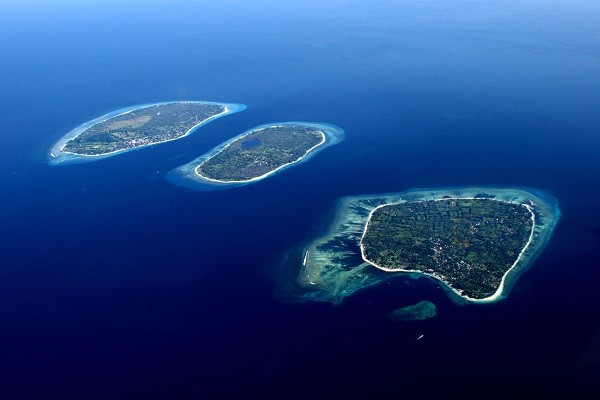
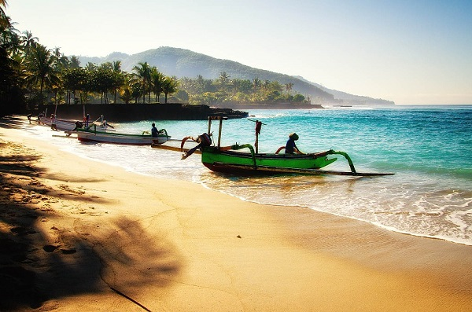
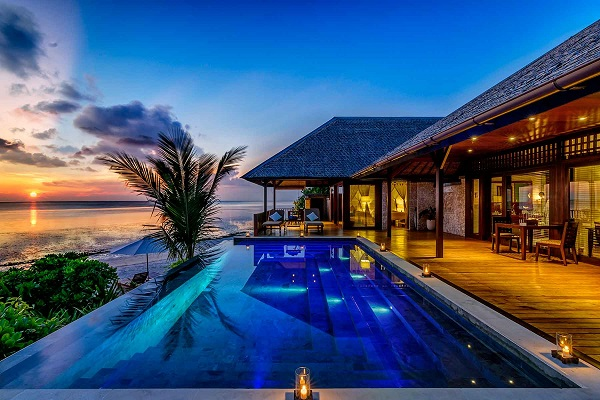

Although right next to the famous island of Bali, the island of Lombok is still relatively untouched, and its dive sites are amazingly well preserved. With many coral reefs and magnificent pinnacles, this is the ideal place for a diving trip to Indonesia.

Bali is the most touristic island of Indonesia. But it must be said, diving in Bali is still beautiful. There is a kind of synthesis of all the dives of Indonesia with large drop offs, volcanic seabed with black sands, wrecks of the Second World War and magnificent seagrass meadows.

The island is isolated in the heart of the Tukangbesi Archipelago, off the southern tip of Sulawesi. Wakatobi is actually a group of islands such as Wangi-Wangi, Kaledupa, Tomia and Binongko. These islands are a underwater national park.